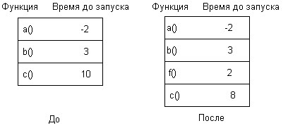
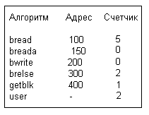

В функции программы обработки прерываний по таймеру входит:
- перезапуск часов,
- вызов на исполнение функций ядра, использующих встроенные часы,
- поддержка возможности профилирования выполнения процессов в режимах ядра и задачи;
- сбор статистики о системе и протекающих в ней процессах,
- слежение за временем,
- посылка процессам сигналов "будильника" по запросу,
- периодическое возобновление процесса подкачки (см. следующую главу),
- управление диспетчеризацией процессов.
Некоторые из функций реализуются при каждом прерывании по таймеру, другие - по прошествии нескольких таймерных тиков. Программа обработки прерываний по таймеру запускается с высоким приоритетом обращения к процессору, не допуская во время работы возникновения других внешних событий (таких как прерывания от периферийных устройств). Поэтому программа обработки прерываний по таймеру работает очень быстро, за максимально-короткое время пробегая свои критические отрезки, которые должны выполняться без прерываний со стороны других процессов. Алгоритм обработки прерываний по таймеру приведен на Рисунке 8.9.
#include <sys/types.h>
#include <sys/stat.h>
#include <sys/signal.h>
main(argc,argv)
int argc;
char *argv[];
{
extern unsigned alarm();
extern wakeup();
struct stat statbuf;
time_t axtime;
if (argc != 2)
{
printf("только 1 аргумент\n");
exit();
}
axtime = (time_t) 0;
for (;;)
{
/* получение значения времени доступа к файлу */
if (stat(argv[1],&statbuf) == -1)
{
printf("файла с именем %s нет\n",argv[1]);
exit();
}
if (axtime != statbuf.st_atime)
{
printf("к файлу %s было обращение\n",argv[1]);
axtime = statbuf.st_atime;
}
signal(SIGALRM,wakeup); /* подготовка к приему
сигнала */
alarm(60);
pause(); /* приостанов до получения сигнала */
}
}
wakeup()
{
}
|
Рисунок 8.8. Программа, использующая системную функцию alarm
алгоритм clock
входная информация: отсутствует
выходная информация: отсутствует
{
перезапустить часы; /* чтобы они снова посылали преры-
вания */
если (таблица ответных сигналов не пуста)
{
установить время для ответных сигналов;
запустить функцию callout, если время истекло;
}
если (профилируется выполнение в режиме ядра)
запомнить значение счетчика команд в момент прерыва-
ния;
если (профилируется выполнение в режиме задачи)
запомнить значение счетчика команд в момент прерыва-
ния;
собрать статистику о самой системе;
собрать статистику о протекающих в системе процессах;
выверить значение продолжительности ИЦП процессом;
если (прошла 1 секунда или более и исполняется отрезок,
не являющийся критическим)
{
для (всех процессов в системе)
{
установить "будильник", если он активен;
выверить значение продолжительности ИЦП;
если (процесс будет исполняться в режиме задачи)
выверить приоритет процесса;
}
возобновить в случае необходимости выполнение про-
цесса подкачки;
}
}
|
Рисунок 8.9. Алгоритм обработки прерываний по таймеру
В большинстве машин после получения прерывания по таймеру требуется программными средствами произвести перезапуск часов, чтобы они по прошествии интервала времени могли вновь прерывать работу процессора. Такие средства являются машинно-зависимыми и мы их рассматривать не будем.
Некоторым из процедур ядра, в частности драйверам устройств и сетевым протоколам, требуется вызов функций ядра в режиме реального времени. Например, процесс может перевести терминал в режим ввода без обработки символов, при котором ядро выполняет запросы пользователя на чтение с терминала через фиксированные промежутки времени, не дожидаясь, когда пользователь нажмет клавишу "возврата каретки" (см. раздел 10.3.3). Ядро хранит всю необходимую информацию в таблице ответных сигналов (Рисунок 8.9), в том числе имя функции, запускаемой по истечении интервала времени, параметр, передаваемый этой функции, а также продолжительность интервала (в таймерных тиках) до момента запуска функции.
Пользователь не имеет возможности напрямую контролировать записи в таблице ответных сигналов; для работы с ними существуют различные системные алгоритмы. Ядро сортирует записи в этой таблице в соответствии с величиной интервала до момента запуска функций. В связи с этим для каждой записи таблицы запоминается не общая продолжительность интервала, а только промежуток времени между моментами запуска данной и предыдущей функций. Общая продолжительность интервала до момента запуска функции складывается из промежутков времени между моментами запуска всех функций, начиная с первой и вплоть до текущей.

Рисунок 8.10. Включение новой записи в таблицу ответных сигналов
На Рисунке 8.10 приведен пример добавления новой записи в таблицу ответных сигналов. (К отрицательному значению поля "время до запуска" для функции a мы вернемся несколько позже). Создавая новую запись, ядро отводит для нее надлежащее место и соответствующим образом переустанавливает значение поля "время до запуска" в записи, следующей за добавляемой. Судя по рисунку, ядро собирается запустить функцию f через 5 таймерных тиков: оно отводит место для нее в таблице сразу после функции b и заносит в поле "время до запуска" значение, равное 2 (тогда сумма значений этих полей для функций b и f составит 5), и меняет "время до запуска" функции c на 8 (при этом функция c все равно запускается через 13 таймерных тиков). В одних версиях ядро пользуется связным списком указателей на записи таблицы ответных сигналов, в других меняет положение записей при корректировке таблицы. Последний способ требует значительно меньших издержек при условии, что ядро не будет слишком часто обращаться к таблице.
При каждом поступлении прерывания по таймеру программа обработки прерывания проверяет наличие записей в таблице ответных сигналов и в случае их обнаружения уменьшает значение поля "время до запуска" в первой записи. Способ хранения продолжительности интервалов до момента запуска каждой функции, выбранный ядром, позволяет, уменьшив значение поля "время до запуска" в одной только первой записи, соответственно уменьшить продолжительность интервала до момента запуска функций, описанных во всех записях таблицы. Если в указанном поле первой записи хранится отрицательное или нулевое значение, соответствующую функцию следует запустить. Программа обработки прерываний по таймеру не запускает функцию немедленно, таким образом она не блокирует возникновение последующих прерываний данного типа. Текущий приоритет работы процессора вроде бы не позволяет таким прерываниям вмешиваться в выполнение процесса, однако ядро не имеет представления о том, сколько времени потребуется на исполнение функции. Казалось бы, если функция выполняется дольше одного таймерного тика, все последующие прерывания должны быть заблокированы. Вместо этого, программа обработки прерываний в типичной ситуации оформляет вызов функции как "программное прерывание", порождаемое выполнением отдельной машинной команды. Поскольку среди всех прерываний программные прерывания имеют самый низкий приоритет, они блокируются, пока ядро не закончит обработку всех остальных прерываний. С момента завершения подготовки к запуску функции и до момента возникновения вызываемого запуском функции программного прерывания может произойти множество прерываний, в том числе и программных, в таком случае в поле "время до запуска", принадлежащее первой записи таблицы, будет занесено отрицательное значение. Когда же наконец программное прерывание происходит, программа обработки прерываний убирает из таблицы все записи с истекшими значениями полей "время до запуска" и вызывает соответствующую функцию.
Поскольку в указанном поле в начальных записях таблицы может храниться отрицательное или нулевое значение, программа обработки прерываний должна найти в таблице первую запись с положительным значением поля и уменьшить его. Пусть, например, функции a соответствует "время до запуска", равное -2 (Рисунок 8.10), то есть перед тем, как функция a была выбрана на выполнение, система получила 2 прерывания по таймеру. При условии, что функция b 2 тика назад уже была в таблице, ядро пропускает запись, соответствующую функции a, и уменьшает значение поля "время до запуска" для функции b.
Построение профиля ядра включает в себя измерение продолжительности выполнения системы в режиме задачи против режима ядра, а также продолжительности выполнения отдельных процедур ядра. Драйвер параметров ядра следит за относительной эффективностью работы модулей ядра, замеряя параметры работы системы в момент прерывания по таймеру. Драйвер параметров имеет список адресов ядра (главным образом, функций ядра); эти адреса ранее были загружены процессом путем обращения к драйверу параметров. Если построение профиля ядра возможно, программа обработки прерывания по таймеру запускает подпрограмму обработки прерываний, принадлежащую драйверу параметров, которая определяет, в каком из режимов - ядра или задачи - работал процессор в момент прерывания. Если процессор работал в режиме задачи, система построения профиля увеличивает значение параметра, описывающего продолжительность выполнения в режиме задачи, если же процессор работал в режиме ядра, система увеличивает значение внутреннего счетчика, соответствующего счетчику команд. Пользовательские процессы могут обращаться к драйверу параметров, чтобы получить значения параметров ядра и различную статистическую информацию.

Рисунок 8.11. Адреса некоторых алгоритмов ядра
На Рисунке 8.11 приведены гипотетические адреса некоторых процедур ядра. Пусть в результате 10 измерений, проведенных в моменты поступления прерываний по таймеру, были получены следующие значения счетчика команд: 110, 330, 145, адрес в пространстве задачи, 125, 440, 130, 320, адрес в пространстве задачи и 104. Ядро сохранит при этом те значения, которые показаны на рисунке. Анализ этих значений показывает, что система провела 20% своего времени в режиме задачи (user) и 50% времени потратила на выполнение алгоритма bread в режиме ядра.
Если измерение параметров ядра выполняется в течение длительного периода времени, результаты измерений приближаются к истинной картине использования системных ресурсов. Тем не менее, описываемый механизм не учитывает время, потраченное на обработку прерываний по таймеру и выполнение процедур, блокирующих поступление прерываний данного типа, поскольку таймер не может прерывать выполнение критических отрезков программ и, таким образом, не может в это время обращаться к подпрограмме обработки прерываний драйвера параметров. В этом недостаток описываемого механизма, ибо критические отрезки программ ядра чаще всего наиболее важны для измерений. Следовательно, результаты измерения параметров ядра содержат определенную долю приблизительности. Уайнбергер [Weinberger 84] описал механизм включения счетчиков в главных блоках программы, таких как "if-then" и "else", с целью повышения точности измерения частоты их выполнения. Однако, данный механизм увеличивает время счета программ на 50-200%, поэтому его использование в качестве постоянного механизма измерения параметров ядра нельзя признать рациональным.
На пользовательском уровне для измерения параметров выполнения процессов можно использовать системную функцию profil:
profil(buff,bufsize,offset,scale);
где buff - адрес массива в пространстве задачи, bufsize - размер массива, offset - виртуальный адрес подпрограммы пользователя (обычно, первой по счету), scale - способ отображения виртуальных адресов задачи на адрес массива. Ядро трактует аргумент "scale" как двоичную дробь с фиксированной точкой слева. Так, например, значение аргумента в шестнадцатиричной системе счисления, равное Oxffff, соответствует однозначному отображению счетчика команд на адреса массива, значение, равное Ox7fff, соответствует размещению в одном слове массива buff двух адресов программы, Ox3fff - четырех адресов программы и т.д. Ядро хранит параметры, передаваемые при вызове системной функции, в пространстве процесса. Если таймер прерывает выполнение процесса тогда, когда он находится в режиме задачи, программа обработки прерываний проверяет значение счетчика команд в момент прерывания, сравнивает его со значением аргумента offset и увеличивает содержимое ячейки памяти, адрес которой является функцией от bufsize и scale.
Рассмотрим в качестве примера программу, приведенную на Рисунке 8.12, измеряющую продолжительность выполнения функций f и g. Сначала процесс, используя системную функцию signal, делает указание при получении сигнала о прерывании вызывать функцию theend, затем он вычисляет диапазон адресов программы, в пределах которых будет производиться измерение продолжительности (начиная с адреса функции main и кончая адресом функции theend), и, наконец, запускает функцию profil, сообщая ядру о том, что он собирается начать измерение. В результате выполнения программы в течение 10 секунд на несильно загруженной машине AT&T 3B20 были получены данные, представленные на Рисунке 8.13. Адрес функции f превышает адрес начала профилирования на 204 байта; поскольку текст функции f имеет размер 12 байт, а размер целого числа в машине AT&T 3B20 равен 4 байтам, адреса функции f отображаются на элементы массива buf с номерами 51, 52 и 53. По такому же принципу адреса функции g отображаются на элементы buf c номерами 54, 55 и 56. Элементы buf с номерами 46, 48 и 49 предназначены для адресов, принадлежащих циклу функции main. В обычном случае диапазон адресов, в пределах которого выполняется измерение параметров, определяется в результате обращения к таблице идентификаторов для данной программы, где указываются адреса программных секций. Пользователи сторонятся функции profil из-за того, что она кажется им слишком сложной; вместо нее они используют при компиляции программ на языке Си параметр, сообщающий компилятору о необходимости сгенерировать код, следящий за ходом выполнения процессов.
#include <signal.h>
int buffer[4096];
main()
{
int offset,endof,scale,eff,gee,text;
extern theend(),f(),g();
signal(SIGINT,theend);
endof = (int) theend;
offset = (int) main;
/* вычисляется количество слов в тексте программы */
text = (endof - offset + sizeof(int) - 1)/sizeof(int);
scale = Oxffff;
printf
("смещение до начала %d до конца %d длина текста %d\n",
offset,endof,text);
eff = (int) f;
gee = (int) g;
printf("f %d g %d fdiff %d gdiff %d\n",eff,gee,
eff-offset,gee-offset);
profil(buffer,sizeof(int)*text,offset,scale);
for (;;)
{
f();
g();
}
}
f()
{
}
g()
{
}
theend()
{
int i;
for (i = 0; i < 4096; i++)
if (buffer[i])
printf("buf[%d] = %d\n",i,buffer[i]);
exit();
}
|
Рисунок 8.12. Программа, использующая системную функцию profil
смещение до начала 212 до конца 440 длина текста 57
f 416 g 428 fdiff 204 gdiff 216
buf[46] = 50
buf[48] = 8585216
buf[49] = 151
buf[51] = 12189799
buf[53] = 65
buf[54] = 10682455
buf[56] = 67
|
Рисунок 8.13. Пример результатов выполнения программы, использующей системную функцию profil
В момент поступления прерывания по таймеру система может выполняться в режиме ядра или задачи, а также находиться в состоянии простоя (бездействия). Состояние простоя означает, что все процессы приостановлены в ожидании наступления события. Для каждого состояния процессора ядро имеет внутренние счетчики, устанавливаемые при каждом прерывании по таймеру. Позже пользовательские процессы могут проанализировать накопленную ядром статистическую информацию.
В пространстве каждого процесса имеются два поля для записи продолжительности времени, проведенного процессом в режиме ядра и задачи. В ходе обработки прерываний по таймеру ядро корректирует значение поля, соответствующего текущему режиму выполнения процесса. Процессы-родители собирают статистику о своих потомках при выполнении функции wait, беря за основу информацию, поступающую от завершающих свое выполнение потомков.
В пространстве каждого процесса имеется также одно поле для ведения учета использования памяти. В ходе обработки прерывания по таймеру ядро вычисляет общий объем памяти, занимаемый текущим процессом, исходя из размера частных областей процесса и его долевого участия в использовании разделяемых областей памяти. Если, например, процесс использует области данных и стека размером 25 и 40 Кбайт, соответственно, и разделяет с четырьмя другими процессами одну область команд размером 50 Кбайт, ядро назначает процессу 75 Кбайт памяти (50К/5 + 25К + 40К). В системе с замещением страниц ядро вычисляет объем используемой памяти путем подсчета числа используемых в каждой области страниц. Таким образом, если прерываемый процесс имеет две частные области и еще одну область разделяет с другим процессом, ядро назначает ему столько страниц памяти, сколько содержится в этих частных областях, плюс половину страниц, принадлежащих разделяемой области. Вся указанная информация отражается в учетной записи при завершении процесса и может быть использована для расчетов с заказчиками машинного времени.
Ядро увеличивает показание системных часов при каждом прерывании по таймеру, измеряя время в таймерных тиках от момента загрузки системы. Это значение возвращается процессу через системную функцию time и дает возможность определять общее время выполнения процесса. Время первоначального запуска процесса сохраняется ядром в адресном пространстве процесса при исполнении системной функции fork, в момент завершения процесса это значение вычитается из текущего времени, результат вычитания и составляет реальное время выполнения процесса. В другой переменной таймера, устанавливаемой с помощью системной функции stime и корректируемой раз в секунду, хранится календарное время.
Предыдущая глава || Оглавление || Следующая глава
Comments: [email protected]
Copyright © CIT